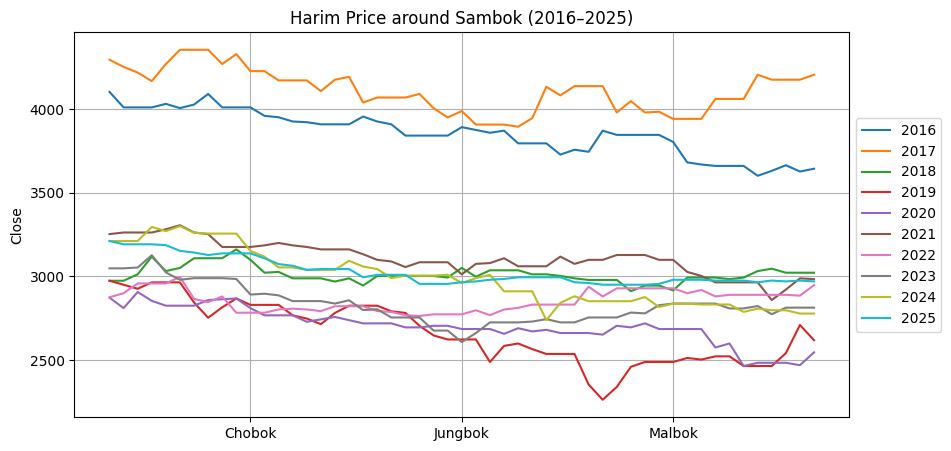
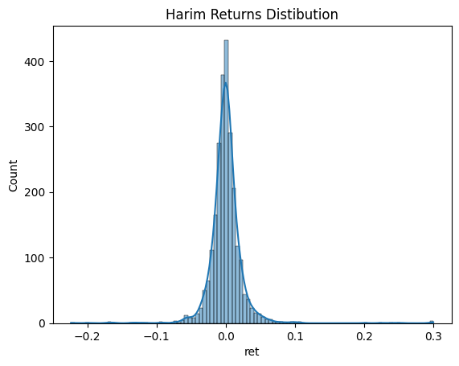
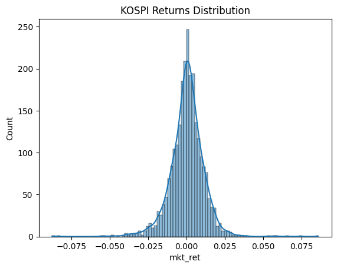
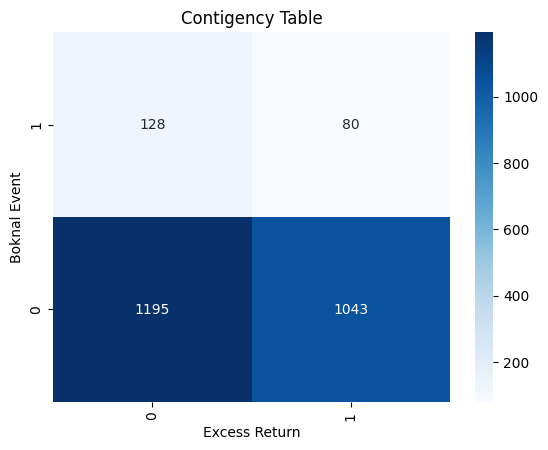

데이터 분석2026.03
하림 주가 · 통계 분석
하림 주가 · 통계 분석
복날의 하림 주가 변동 영향 분석
Pandas · SciPy · statsmodels · Matplotlib · Seaborn
복날의 닭고기 수요 증가가 하림 주가에도 영향을 주는지 분석했습니다. 2016–2025년 하림과 KOSPI 수익률을 비교하고, 시장 움직임을 반영해 복날 전후의 수익률을 살펴봤습니다.
데이터 출처 Yahoo Finance에서 yfinance로 수집
하림 136480.KS · KOSPI ^KS11 / 2016.01.01–2025.12.31

수익률 분포를 확인하고 시장 수익률과 비교
거래일을 기준으로 하림과 KOSPI 수익률 2,446개를 맞췄습니다. D’Agostino–Pearson 정규성 검정과 Spearman 상관분석을 적용한 뒤, 시장 수익률과 복날 구간 더미를 사용해 회귀분석을 진행했습니다.



복날 전후 3거래일을 이벤트 구간으로 설정
- OLS 회귀분석에 HC0 강건 표준오차 적용
- 복날 구간과 나머지 구간의 양(+)의 초과수익 비율을 카이제곱 검정으로 비교
시장 수익률을 고려했을 때
복날 구간의 하림 수익률은
평소보다 약 0.34%p 낮게 나타났습니다.
| 분석 | 결과 |
|---|---|
| 하림·KOSPI 수익률 상관 | Spearman ρ = 0.3771 |
| 복날 구간 회귀계수 | −0.0034 (p = 0.001) |
| 양(+)의 초과수익 비율 차이 | 카이제곱 p = 0.029 |